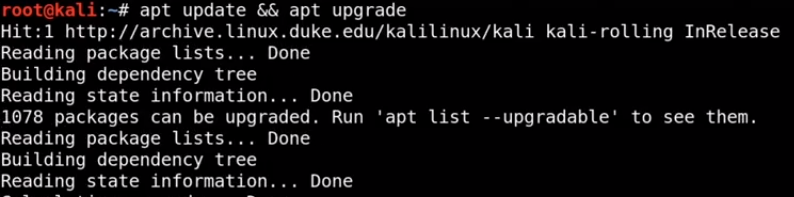

# to update and upgrade system files .- apt update && apt upgrade
this commad will perform some task
1. install new package
2. remove old/outdated package.
3. upgrade package

# installing some specific tools .
installing python
this will install all necessory file and python in system .

# one imp tool to fix problem in kali linux 2021
1. search " pimp my kali" on google .
2. select "Dewat -arch" github file ..

3.. copy github code.
4. now open terminal and switch to root user by

5. change dir to /opt by

6 . in opt folder , run this command - git clone [paste the link]

7. now change directiory to pimpmykali , list dir by lsand you can see here " pimpmykali.sh" shell script file .

8. run this file by

now select 0 to fix all problem ..